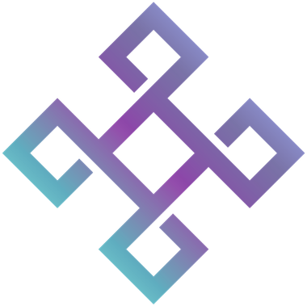

Nada aqui se sustenta sozinho
O símbolo do clube é um nó: quatro laços que só ficam de pé porque se cruzam. É como blockchain funciona e é como a gente estuda — aula toda semana, ciclo de projeto todo mês, cada área segurando a outra.
Ver como o clube se organizaQuatro áreas, um calendário
Todo membro escolhe uma área no processo seletivo. Nenhuma entrega sozinha: o que a Educacional ensina vira projeto, o que Projetos entrega vira conteúdo, e Pessoas mantém a estrutura de pé.
Educacional
Aulas internas, dicionário, trilhas e o material de estudo do clube.
Projetos
Os projetos técnicos, do MVP à entrega, com acompanhamento semanal.
Marketing
Presença pública, conteúdo e as redes sociais do Inteli Blockchain.
Pessoas
Processo seletivo, PDI, acompanhamento e cultura dos membros.
Dois relógios, sem atropelo
Aula interna
Conduzida pela área Educacional e aberta a todos os membros. Tokenização, DAO, redes blockchain e DeFi — cada tema com material e dicionário próprios, publicados no repositório do clube.
Ciclo de projeto
Cada projeto abre com um termo de abertura, roda em ciclo de um mês e tem acompanhamento semanal. O que sai daí vai para o GitHub da organização, não para a gaveta.
O clube tem cara
Ornitorrinco de terno
O mascote do Inteli Blockchain é um ornitorrinco: o bicho que não coube em nenhuma categoria e obrigou a biologia a abrir uma nova. Blockchain fez o mesmo com a ideia de banco de dados.
Ele aparece de terno, boina e visor — porque a tecnologia é séria, mas o clube não é solene.
A marca ao lado dele é o mesmo nó da logo, bordado no paletó.

Onde o clube chegou
O que os membros construíram
Uma amostra dos 25. Todos com código aberto na organização do clube no GitHub.
DeVolt
Marketplace descentralizado que conecta quem produz e quem consome energia, com negociação direta.
GitHub → SustentabilidadeCarbonTracker
IoT e blockchain para monitorar emissões de carbono e tornar a compensação auditável.
GitHub → EducaçãoHigh Block
Programa de formação de builders Web3, com desafios práticos e trilha própria.
Ver programa → IdentidadeSkillPass
Credenciais verificáveis para registrar competências sem depender de um emissor único.
GitHub → AgroPólenChain
Rastreabilidade de cadeia produtiva do agronegócio, do produtor ao comprador final.
GitHub → DocumentaçãoDocs³
Site público de tutoriais: Foundry, carteira, faucet e primeiro contrato.
Abrir Docs³ →De 2022 até agora
- Fundação do clube
- Ethereum SP
- DEVCON VI
- Workshop Web3
- Workshop preparatório
- Inteli Blockchain Challenge
- Processo seletivo
- Starknet Basecamp
- 1º Bitcoin Students Day
- Tokennation
- Lançamento do Docs³
- 1º Workshop ZK
Sobre entrar no clube: a entrada é por processo seletivo, aberto a alunos do Inteli. Não haverá processo neste segundo semestre — quando abrir, sai no Instagram e no LinkedIn do clube.